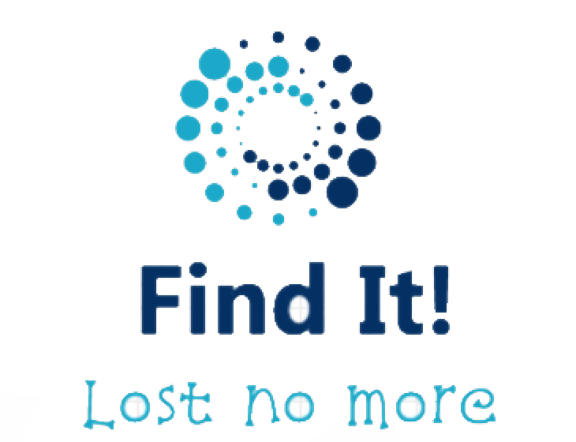
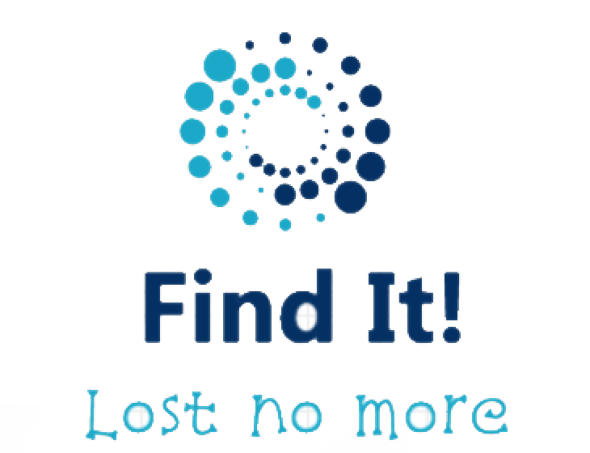

While wandering around the school to identify improvements for it, I realized that there were plenty of clothes scattered around the halls. The idea of having an app where people can post lost and found items came to me as soon as I had to tell my entrepreneurship teacher about an idea that will fix the school. As soon as this idea came to my head, it stuck with me.
As I said before, the product will be an app which will be used in schools to find items that students have lost. I am planning to launch this app for all schools that would be willing to sign up with the app. It will be similar to MyBSS because it is a school app. I am intending for the target market to be for people from the start of grade 1 up to teachers and staff.
"Our mission is to provide an easy and interactive app to help schools minimize lost items. Satisfaction and happiness from our customers, employees, and shareholders is what matters the most."
It’s all about contributing to the 'common good' out there in the school grounds.
By connecting students to one another, we help students create local lost and found communities that work together to improve the tracking of lost items.
We are dedicated to earning the trust and respect of our customers, partners and neighbours and promoting environmental sustainability. By welcoming a diversity of people and ideas to our business, we create more opportunities for learning and success that benefit customers, partners (employees) and community. It is about being responsible and doing things that are good for the planet and each other.